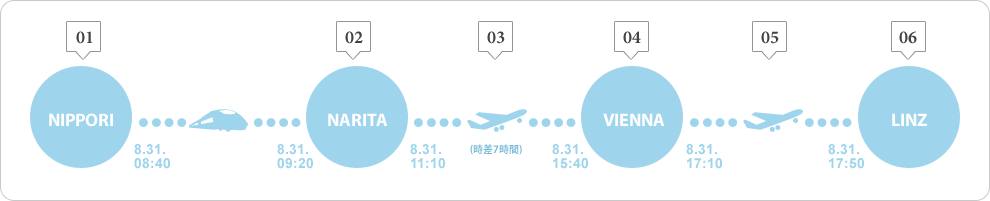
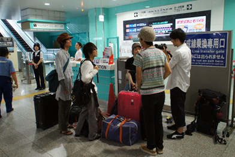
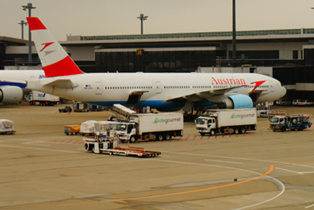
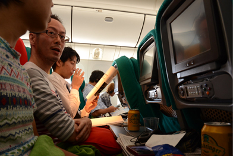
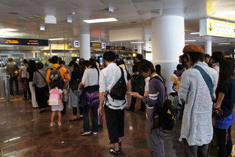
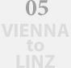
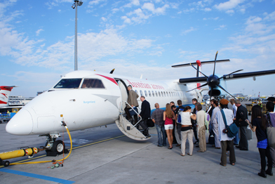
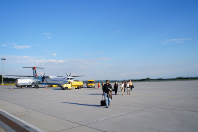

|  | 集合 8/31 8:00(日本時間) 朝の京成日暮里駅。これからスカイライナーに乗って一行は成田空港へ。日暮里駅には両替窓口が設けられており、ここで日本円をユーロに両替することができます。成田空港よりも空いているので、前日までに両替をする時間のなかった方はここで済ませてしまうと楽かもしれません。ここから終点の「空港第2ビル」までは約40分。 |
|
|  | 成田空港にて 8/31 10:30(日本時間) 日本からリンツへの直行便はないので、まずはウィーンへ向かいます。今回搭乗するのは、「オーストリア航空ボーイング777」。1日1便、東京とウィーンとを結んでいます。各自トランクやザックを預けてひとしきり空港を散策した後、手荷物検査と出国審査を済ませます。そしていよいよ出発。時刻は、日本時間11時10分。 |
|
|  | 機上にて 8/31 12:40(日本時間) 機内食は、離陸直後と着陸直前の2回。1回目の食事を済ませると、シートに身を委ねて目を閉じる人があちらこちらに見られ、自然と周囲は静まり返ります。眠っていた人達が起き出すのは、フライトも後半に差しかかってから。機内を歩き回ったり、ドア付近で立ち話を交わす人も出てきます。到着は、現地時間の16時20分ですが、時差7時間の東京はもう深夜。 |
|
|  | ウィーン空港での入国審査 8/31 16:20(現地時間) 入国審査の行列を抜けると、ひと息つく暇もなくリンツ行きの搭乗ロビーへ。50分の余裕があるとはいえ、入国審査や慣れない案内表示（思いのほか英語は少ない！）にとまどうと、思いのほかあたふたすることにもなりそう。成田で預けたスーツケースやトラベルザックはそのままリンツへ送られるので、ここで受け取る必要はありません。 |
|
|  |  | 乗り継ぎ便への搭乗 8/31 17:10(現地時間) ウィーンからは小さなプロペラ機に乗り換えて最終目的地のリンツへ向かいます。50人も乗れば満席となりそうな機内は、飛行機というよりはむしろバスのような雰囲気で、日本人にとってもやや窮屈。30分強の短いフライトですが、ミネラルウォーターのボトルが配られました。外の景色に目を奪われていると、あっという間に着陸体制に入ります。 |
|
|  | 到着 8/31 17:50(現地時間) 成田を出発してから13時間。長旅の終着点は、見渡す限りの芝生と滑走路でした。 |
|